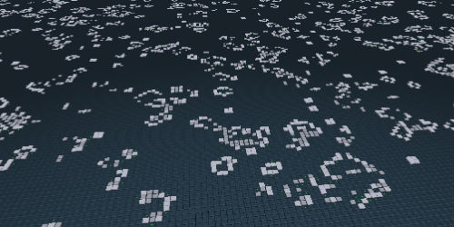

The initial idea for this project was to take Conway's Game of Life, this highly abstract ‘game’ which is played on a sort of ideal, featureless grid, and add absurd amounts of highly concrete detail: grass, bugs swarming around, pockmarks, pulsations, maybe veins and hair—who knows? I’ve seen enough raymarching demos on Shadertoy and elsewhere to know it’s theoretically possible to do something like what I had in mind, largely because the cost in raymarching mostly depends on the number of pixels on your display surface, rather than the scene complexity. In practice, however, it’s not so simple to create that scene complexity in a controlled manner. For instance, you could raymarch a 3D fractal with soft shadows and highly realistic material properties (e.g. subsurface scattering, .e.g https://www.shadertoy.com/view/4sX3R2), creating a scene with an extraordinary degree of visual complexity and realism; however, part of what makes this possible is that the manner in which the fractal is represented in code is particularly amenable to raymarching. When raymarching, you are rendering special kinds of functions; it’s reasonable to represent a fractal with a function; it’s much more difficult to represent, e.g., a realistic model of a person via a small number of manually written functions. Additionally, as I discuss further later, a lot of the details I wanted wouldn’t look good from a distance, and yet that’s where a lot of the action in Conway’s Game of Life is happening.
Anyway, single cubes with rounded corners and edges are easy to represent with single functions, and there’s a neat method of performing operations on the input to such functions that allows you to cause distortions in the output in interesting ways (excellent video on the subject: How to Create Content with Signed Distance Functions). In my case, I used a modulus operation to create a visual repetition of the single cube.

The problem once you’ve done this is creating controlled variations in the particular repeated instances. The main variation I would need was the presence or non-presence of cubes at particular locations. I ended up just using a grid full of ones and zeros, encoded in an OpenGL texture so that my fragment shader could access it. After performing the modulus operation, I had an index into the visual grid it created (if you consider a modulus operation as giving you the remainder to a division operation, the index is just the division minus the modulus), which I could use to look up info about particular cells which was encoded as color data in the previously mentioned texture. Each cell had four floats associated to it (RGBA color data); I’ve used two of them so far—one to indicate life/death, while the other said whether a cell had changed state during the last ‘turn,’ which I used to animate the cells’ births and deaths.
Well, this worked pretty well initially, but one of the things I wanted to do from the outset was to have the ‘tiles’ (live cells) animate across grid boundaries. That’s where you run into some limitations with the modulus operator (see the above image and note that the shadows end abruptly at cell boundaries). It would’ve been possible to hack this together by always rendering a couple of tiles per cell, with perfectly timed offsetting and resizing—but it would’ve been pretty nasty (and I still couldn't use, e.g. fOpUnionSoft to smoothly join neighboring tiles across boundaries, or anything). And it occurred to me eventually that animating across boundaries gets a little too far from what’s actually happening in the ‘game’ and could end up being more misleading than pretty. Here’s some early experimentation with that:
Ultimately this ended up putting a big damper on my easy access to realism. The primary source of it was the way lighting and shadows are calculated in a raymarched scene, but if at most distances you just have a few pixels between the cube and a cell boundary, there’s not much to work with. Additionally, around this time, I started playing with more ‘patterns’ (Conway’s Game of Life initial conditions), and had a reminder that most of the interesting things you actually see in Conway’s are at a fair distance, while running the game at pretty rapid speeds. So, I needed to ensure that the visual effects I was creating looked good under those conditions too.
That’s when I got a refresher on aliasing.
That was a headache for while, though I did end up coming across a nice solution eventually: just fade out the opacity of grid lines as they move into the distance. This works better than you’d think (or than I thought it would anyway). I believe it’s partly because the gradient removes some of the regularity that causes large, coherent artifacts—the same kind of thing you get from blurring to antialias. Or maybe it is all just because the lines are less visible in the distance. *shrug* Anyhow, there are still serious issues if you look at the horizon (not depicted in the screenshot)—but it mostly looked fine after using this fading technique

I kind of think the visuals in that version are better than what I ended up with in some respects—but I personally preferred the highly textured appearance, I think because of the non-abstractness I was originally shooting for. Anyway, the final visuals were a lot of tweaking things until they looked right, and there was often no plan or underlying concept behind things. The texture on the floor for instance, was accidentally created by my misusing a noise function with negative numbers :) The green light that shows up when tiles are being ‘born’ is using the old lighting system, but the reason it doesn’t look totally flat is that I was accidentally using the cube’s normals for the lighting calculations, rather than the floor’s! I have some misgivings about these things—but at the same time, I’ve always appreciated the artificiality and trickery underlying much of real-time rendering (though granted, it’s not often achieved purely by stumbling around, I don’t think)—so I was a little glad to join in on the fun.
The last tricky part (aside from annoying CSS things, and dealing with the fact I’d need variations for mobile)—was getting ‘picking’ working. Picking is where you go from the 2D coordinates of the pixels making up the rendered image, follow a ray into the scene, and discover which object the ray hits. In my case this was used for the ‘editing mode,’ where users can jump in and add or remove tiles. The problem in my case was that most of the application resides in javascript, including the parts that needed information about which cell the mouse was over, but the 3D to 2D projection takes place in the shader, as part of the raymarching algorithm. It’s much easier to bring information into a (GLSL fragment) shader than it is to bring it out. In fact, the only method I could find was to render the scene again onto an offscreen image rather than onto the WebGL canvas, and then read the pixel data back in javascript. So, after trying a number of other things, I ended up doing one more render pass on a one pixel texture; the one pixel contained the indices of the cell which the mouse was presently over (I passed the mouse position into the shader via a ‘uniform’—that’s standard though).
Part of what I wanted to figure out with all this is how viable it would be to use raymarching to create practical applications. My stance now is that it mostly depends on how well you know the domain. It’s specialized, there’s a lot to it. I could hack something together, but I’m sure if some of the experts on Shadertoy were to attempt something similar, the results would have been far superior. In any case, I’m happy enough with the result, and it was a pretty good experience over all—and I’m curious whether anyone will do anything with it or the source!
Credits
I'd never have heard of raymarching or distance functions if it hadn't been for 'Iñigo Quilez – iq/rgba,' and these notes to a presentation he gave: Rendering Worlds with Two Triangles with raytracing on the GPU in 4096 bytes.
While I put some time into attempting to write my own raymarcher in the past, that wasn't really the focus of this project and I used a lot of the core pieces, nearly word for word, from this cool project: https://www.shadertoy.com/view/llVXRd (which I should point out, itself mentions that the raymarching in it is adapted from this tutorial-project https://www.shadertoy.com/view/Xl2XWt).
I hadn't heard of this nice utils library before this project, but ended up using a few functions of their's: hg_sdf
For the texture on the ground, I used iq's noise function from here: https://www.shadertoy.com/view/Msf3WH
I also used Three.js for quite a bit, starting with a raymarching demo in their examples collection, which I harvested for boilerplate kinds of things to set up the fullscreen quad and camera. That demo is here.
Half of the Conway's 'patterns' I used came from David Ingalls Bell.
The other half came from a pattern collection by Alan Hensel.
The End